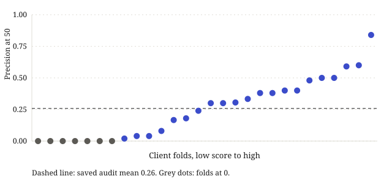

Ranking Pages for Content Refresh: Leakage Audit and Grouped Validation
FlyRank ML Internship · October 2026
Abstract
Editors can refresh only a short list of pages in a week, and they need an order for that list when impressions are falling. I ranked 37,385 pseudonymized pages from a March 2026 slice of the FlyRank internship warehouse, with a random forest on four features and a CTR-headroom rule as the baseline. The label is a drop of more than 20% from the prior 30 days to the most recent 30 days, and the traffic features are measured inside that recent window, so the score flags pages that are already declining. On the saved leave-one-client-out audit, Precision@50 is 0.26 ± 0.24 (about 12.9 declining pages in a list of 50, against about 10.5 at the 0.21 base rate). A refit of the 28 client folds put the gap over the baseline at 0.08, with a bootstrap 95% interval of 0.03 to 0.14, and seven folds still score 0.
1. Introduction
A content team can refresh only so many URLs in a week. When impressions fall, the question is which pages to open first. A model can look accurate on average and still fill the top of the queue with the wrong URLs.
I studied that ordering on page-level Google Search Console aggregates from FlyRank clients, joined to content metadata. Clients and URLs are pseudonymized. A false positive spends editor time. A miss leaves a high-impression URL out of the week's work.
What follows is the leakage audit, the rule I compared against, the client-level checks, and a playbook I have not tested against later traffic.
3. Data
The rows come from the Hugging Face dataset FlyRank/internship-warehouse, tables fact_content_daily_performance and dim_content. I used the March 2026 partition, with January and February read only to fill the earlier impression window. The numbers in this page are from that warehouse slice. They are not from the small CSV shipped in the repository.
For the March slice the recent window is 2 March through 31 March 2026. The prior window is 31 January through 1 March 2026.11. The query keeps a recent-window day when report_date > 31 March 2026 minus 30 days, and a prior-window day when report_date > 31 March 2026 minus 60 days and report_date <= 31 March 2026 minus 30 days. imp_last30, avg_pos_last30, and ctr_last30 are computed on the recent window. The label compares the recent window with the prior window. content_age_days is the page's age on 31 March 2026 and does not use impressions. The traffic features therefore sit inside the label's recent leg. This is a nowcast of pages whose impressions are already down, with the window ending on 31 March 2026.
After those windows I kept 37,385 pages. A page stays in only if it has recent impressions, gsc_data_available is true on every daily row loaded for it through 31 March 2026, content_created_date is on or before that day, and the page is at least 90 days old. The slice base rate of the decline label is 0.21. I did not use fact_content_daily_performance_sample. That table is the June 2026 partition. The data-contract notebook counts it (11,694,072 rows) and leaves it unused, because June is the panel's last month and the natural outcome window of a past-to-future label.
Every row uses a hashed client id and a hashed content id. This page has no client names, live URLs, or search queries.
4. Methodology
Label and features
A page is labeled declining when prior-window impressions are positive and recent impressions fell by more than 20%: (imp_last30 − imp_prev30) / imp_prev30 < −0.20. The forest sees four columns: imp_last30, avg_pos_last30, ctr_last30, and content_age_days. CTR is clicks divided by impressions in the recent window, times 100, so a value of 0.76 means 0.76%.
The leakage audit
On the six-client holdout, a forest that still included log_imp_prev30 scored Precision@50 of 1.00. Every page in that top 50 carried the decline label. The column is log(1 + imp_prev30), a monotone transform of the prior-window impressions. Those prior impressions enter the label, and imp_last30 was already a feature, so the two impression columns were enough to rebuild the comparison. I had already kept trend_pct and trend_direction out of the features for the same reason. I dropped log_imp_prev30 and fit the holdout again. On the audit re-run, Precision@50 was 0.38.
Baseline
The baseline ranks pages by 90-day impressions, times how far recent CTR sits below the median CTR of the page's position tier (floored at zero), times a tier weight. The weights are 1 for positions 1–3, 0.9 for 4–10, 0.85 for 11–20, 0.7 for 21–50, 0.5 deeper than that, and 0 when position is missing. I score it with the same Precision@50 rule as the forest.
Validation
I used three checks. A single holdout keeps about 20% of clients out of training (6 of 28, seed 42) and ranks the pooled holdout pages. Leave-one-client-out trains on the other 27 clients and ranks inside the held-out client. The time check fits on the February window, ending 28 February 2026, and ranks every March page. The model is a random forest with balanced subsample weights, depth 10, 200 trees, at least 25 samples per leaf, and random_state=42.
What I tried
I chose the forest because the model notebook treats position and CTR as an interaction a linear score can miss, and because the forest gives permutation importance on the holdout. Depth 10 was fixed in that code. I did not find a search over depth. On the same client holdout, the executed model table also records logistic regression at Precision@50 of 0.36, next to 0.34 for the forest. Gradient boosting was written to train only if the forest beat logistic regression by at least 0.03 on that split. The saved flag says it did not run. The 0.34 and the audit's 0.38 are different executions of the forest. The results table uses the audit.
5. Results
| Check | Precision@50 | How the list was cut |
|---|---|---|
| Leave-one-client-out | 0.26 ± 0.24 | Mean and population standard deviation across 28 clients. Ranked inside each client. Seven folds at 0. |
| Single holdout | 0.38 | Top 50 of the six held-out clients, pooled. Baseline on the same pages: 0.24. |
| February to March | 0.44 | Train on February, top 50 of all March pages. Baseline on that ranking: 0.34. |
| Baseline, full March slice | 0.34 | Rule ranked on every in-scope page. |
| Baseline, leave-one-client-out | 0.17 | Mean across the same 28 client folds. |
A forest trained and scored on the full March slice reaches Precision@50 of 0.92. I use that only as a check that the model can fit this slice.
The three model numbers are different lists.22. The scoring function averages the label over the first min(50, n) rows. When a client has fewer than 50 pages, both scores are the client's own decline rate, so they match. Leave-one-client-out cuts the top 50 inside one client. The holdout cuts the top 50 of six clients pooled together. The February-to-March check cuts the top 50 of all 37,385 March pages. I report them separately.

The abstract's 0.26 ± 0.24 is that leave-one-client-out row: the mean across 28 client folds, with the population standard deviation. At the base rate of 0.21, about 10.5 pages in a list of 50 are declining. The saved mean of 0.26 corresponds to about 12.9. The baseline's leave-one-client-out mean, 0.17, is below the base rate.
The audit file stores the two means and not the 28 pairs, so I refit the same loop. The refit mean was 0.25 for the forest and 0.17 for the baseline, against 0.26 and 0.17 on the receipt, so I left the headline on the receipt. On the refit the mean gap was 0.08. A percentile bootstrap of that gap, 10,000 resamples of the 28 clients with seed 42, gave a 95% interval of 0.03 to 0.14, which stays above zero. The forest was higher on 11 of the 13 clients where the scores differed (Wilcoxon signed-rank p = 0.006).
The February slice has 26 clients and the March slice has 28. Twenty-four clients appear in both, and 33,802 of the 37,385 March pages (90%) also appear in February. The check asks whether a score fit in February still ranks March declines among pages I have mostly already seen. It is a stability check on this panel. I did not score the sealed June partition, so there is no final test on the panel's last month.
The seven folds at zero
The receipt records seven client folds at 0 and does not store the rows. On the refit, six of those folds have between 1 and 7 pages and no declining page. With fewer than 50 pages, Precision@50 is the decline rate of the whole client, so a client with no declines scores 0 whichever way the pages are ordered. The seventh fold has 63 pages and one declining page. The forest's top 50 missed it. The baseline's top 50 included it (Precision@50 of 0.02). Thirteen clients have 50 pages or fewer, and on every one of those folds the two scores tie.
| Pages | Declining pages | Median recent impressions | Forest | Baseline |
|---|---|---|---|---|
| 1 | 0 | 221 | 0 | 0 |
| 3 | 0 | 529 | 0 | 0 |
| 4 | 0 | 819 | 0 | 0 |
| 5 | 0 | 2,339 | 0 | 0 |
| 6 | 0 | 149 | 0 | 0 |
| 7 | 0 | 348 | 0 | 0 |
| 63 | 1 | 1,761 | 0 | 0.02 |

6. Limitations
- The traffic features use the same days as the recent leg of the label. The score describes a decline that is already in the window. I did not test a later outcome.
- The leave-one-client-out mean hides a wide client spread, including seven folds at 0. Section 5 shows what those folds contain on the refit.
- The label is impression momentum in Search Console. I do not observe traffic after a refresh.
- The February-to-March check mostly reuses this panel's pages. June 2026 was left sealed, so the last month of the panel is untested.
- Precision@50 from the client folds, the six-client pool, and the full March ranking are different lists. The paired interval in Section 5 is from a refit that did not reproduce the saved means exactly.
- The playbook in the next section was not checked against later outcomes.
7. An unvalidated playbook
This section is a proposal for turning a rank into an editorial verb. I did not test whether following the verb changes later impressions. The rules below are the ones in the playbook notebook. The forest orders pages. A person still decides.
| Archetype | Rule, in short | Action |
|---|---|---|
HIGH_LEVERAGE_REFRESH | Page-one or striking tier, CTR below the tier median. One branch also requires 90-day impressions at or above the 75th percentile. | Refresh content |
SNIPPET_OPTIMIZATION | Top-three tier, CTR below the tier median. The high-exposure branch also requires the 75th percentile. | CTR/snippet fix, not a rewrite |
UNDEREXPOSED_DECLINE | Deep or positions 21–50. The narrow branch also requires a decline and below-median exposure. | Deprioritise this cycle |
STABLE_HIGH_PERFORMER | Top-three, or page-one/striking, with CTR at or above the tier median. | Protect |
CONTENT_AGING | High exposure, age over 365 days, CTR within 0.05 of the tier median. | Refresh on the next cycle |
NEW_OR_UNCLEAR | Missing position, or a new or flat trend. | Manual triage |
LOW_SIGNAL | 90-day impressions under 100. | No action |
Each archetype carries one reason code from this list: HIGH_LEVERAGE_REFRESH, SNIPPET_CTR_HEADROOM, UNDEREXPOSED_DECLINE, STABLE_PERFORMER_PROTECT, CONTENT_AGING_CYCLE, MANUAL_TRIAGE_UNCLEAR, BELOW_EXPOSURE_FLOOR, INSUFFICIENT_DATA. The proposal's review rules are: look at the top five pages of each client before a refresh, triage NEW_OR_UNCLEAR and LOW_SIGNAL by hand, still look at any page with at least 50,000 impressions over 90 days, and let the editor override the rank.
One March page, content_7bf497ea6afc9f34, shows the path. Recent impressions were 734, average position 7.50, CTR 0, age 244 days, and 90-day impressions 2,758. The prior window had 1,234 impressions, a drop of about 40%, so the label is declining. A forest fit on the full March slice, the same kind of fit as the 0.92 check, scored it 0.581. CTR is below the page-one median (0.21). The rules mark it HIGH_LEVERAGE_REFRESH, reason code HIGH_LEVERAGE_REFRESH, action "Refresh content". Its 90-day impressions sit under the slice 75th percentile (12,168), so it takes the broader branch of that rule. This score is from the full-slice fit, not from a client held out of training.

8. What I would do next
I would move the features off the label's recent window, so the score is aimed at a later decline. I would save the per-client Precision@50 pairs with the audit receipt. This refit did not match the saved means, and the interval should be recomputed from the original folds if those scores can be recovered. I would keep June sealed until that split is clean, and then use it once. I would compare tree depth, and logistic regression, on the client folds. I did neither. I would not treat the playbook verbs as measured until I can see what happened to pages after a refresh.
9. Reproducibility
Notebooks and the metric receipts were checked against commit 671937d7bd73071f388c5c0f82e0d7fb41caa1e5. The paired-comparison script was added after that commit. Install the Python packages in requirements.txt. The warehouse notebooks need a Hugging Face token in the environment variable HF_TOKEN, or in the gitignored file work/.hf_token_local. Do not commit the token.
Run the notebooks in this order: research question, task framing, data contract, feature leakage check, signal audit, baseline, model, leakage audit, playbook, then the capstone mirror. The files this page reads are work/outputs/baseline_metrics.json, w05_model_metrics.json, w06_audit_metrics.json, and w07_playbook_metrics.json. The refit is python work/scripts/loo_paired_comparison.py, which writes work/outputs/loo_paired_comparison.json. I ran that refit with scikit-learn 1.9.1. Figures are rebuilt with python work/scripts/build_paper_figures.py.
| Name on this page | Notebook |
|---|---|
| Data contract | w03_data_contract.ipynb |
| Baseline | w04_baseline_score.ipynb |
| Model | w05_model.ipynb |
| Leakage audit | w06_validation_audit.ipynb |
| Playbook | w07_action_playbook.ipynb |
| Paper mirror | capstone.ipynb |
The code is under the MIT license in LICENSE. The text of this page and the figures are under CC BY 4.0. The bundled CSV is covered by DATA_USE.md, not by either of those licenses.
Appendix: unrounded figures
Prose above uses two decimals. Three decimals, and the refit, are here. Full values are in the JSON files.
| Quantity | Value | Source |
|---|---|---|
| Leave-one-client-out mean | 0.258 | Audit receipt |
| Leave-one-client-out standard deviation | 0.237 | Audit receipt, population sd |
| Baseline leave-one-client-out mean | 0.173 | Audit receipt |
| Base rate | 0.210 | March slice |
| Declines per 50 at the base rate | 10.490 | Unrounded base rate × 50 |
| Declines per 50 at the saved mean | 12.922 | Unrounded leave-one-client-out mean × 50 |
| Refit forest mean | 0.253 | Paired-comparison file |
| Refit forest standard deviation | 0.230 | Paired-comparison file |
| Refit baseline mean | 0.174 | Paired-comparison file |
| Refit mean gap | 0.079 | Forest minus baseline |
| Bootstrap 95% interval | 0.028 to 0.144 | 10,000 resamples, seed 42 |
| Wilcoxon p-value | 0.006 | 13 untied clients |
How to cite
Junaid A. (2026). Ranking Pages for Content Refresh: Leakage Audit and Grouped Validation. FlyRank ML Internship.
@misc{junaid2026ranking,
author = {Ahamed, Junaid},
title = {Ranking Pages for Content Refresh: Leakage Audit and Grouped Validation},
year = {2026},
howpublished = {FlyRank ML Internship},
url = {https://junaidahamed-7777.github.io/flyrank-machine-learning/}
}
References
- Kaufman, S., Rosset, S., Perlich, C., & Stitelman, O. (2012). Leakage in data mining: Formulation, detection, and avoidance. ACM Transactions on Knowledge Discovery from Data, 6(4), Article 15. https://doi.org/10.1145/2382577.2382579
- Manning, C. D., Raghavan, P., & Schütze, H. (2008). Introduction to information retrieval. Cambridge University Press. https://nlp.stanford.edu/IR-book/
- Järvelin, K., & Kekäläinen, J. (2002). Cumulated gain-based evaluation of IR techniques. ACM Transactions on Information Systems, 20(4), 422–446. https://doi.org/10.1145/582415.582418
- Google. (n.d.). Creating helpful, reliable, people-first content. Google Search Central. https://developers.google.com/search/docs/fundamentals/creating-helpful-content
- Google. (n.d.). Myths and facts about crawling. Google Crawling Infrastructure. https://developers.google.com/crawling/docs/myths-about-crawling
Acknowledgments
I built this during the FlyRank ML internship. The page-level aggregates are from the Hugging Face dataset FlyRank/internship-warehouse. FlyRank is the organisation.
I designed the study, chose the validation approach, and interpreted the results. I used DeepSeek as a notes store to keep track of my work across sessions, and Grok 4.7 to write most of the code in the notebooks and the page. I ran the code, checked the reported numbers against the saved metrics files, and take responsibility for the final content.